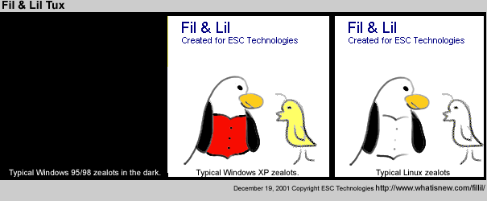
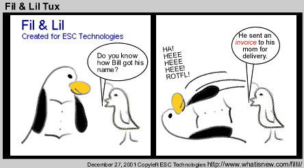
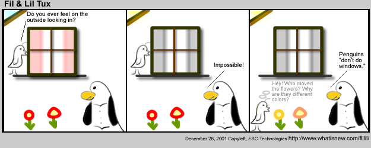
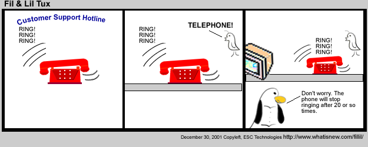
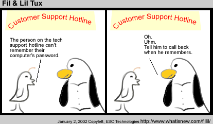

Who are Fil & Lil Tux?
They are evolving characters! Fil Tux is a Linux Zealot trying to indoctrinate Lil Tux.
When did Fil & Lil Tux begin?
Concept was created December 18, 2001. The first cartoon appeared on whatisnew.com December 26, 2001.
Would you like to use Fil & Lil on your website? Go for it! All we ask is that you link back to their home page: http://www.whatisnew.com/fillil/index.cfm
Here's a little brief on the characters in the cartoon:
Fil
Age: 39 Eats: Fish & chips Favorite TV show: Hawaii Five-0 Favorite cartoon: Batman Favorite comedian: Groucho Marx Favorite Marx quote: "You know I could just rent you out as a decoy for duck hunters?"Lil
Age: 29 Eats: bird seed Pets: AJ & Gracie (fictitious dogs on whatisnew.com) Lil wants to know why people use Linux and what Linux is all about. Lil's quote: We're not cartoonists. We were just sitting around the table, Fil started making jokes, and I started writing them down.
Now to more serious stuff:
Fil and Lil are combinations of people we know, customers, distributors, and manufacturers. ESC Technologies operates computer information websites, in addition to being a system builder and component supplier. We like Linux and thought the community needed a chuckle or two.
Layne Heiny, VP ESC Technologies R&D, comes up with most of the jokes and draws Fil & Lil. Loren Heiny, Founder MyEmailStatus.com, also comes up with jokes and funny scenarios.
Lora Heiny, General partner ESC Technologies, draws the background and layout for the cartoon. I edit and delete the REALLY bad jokes.